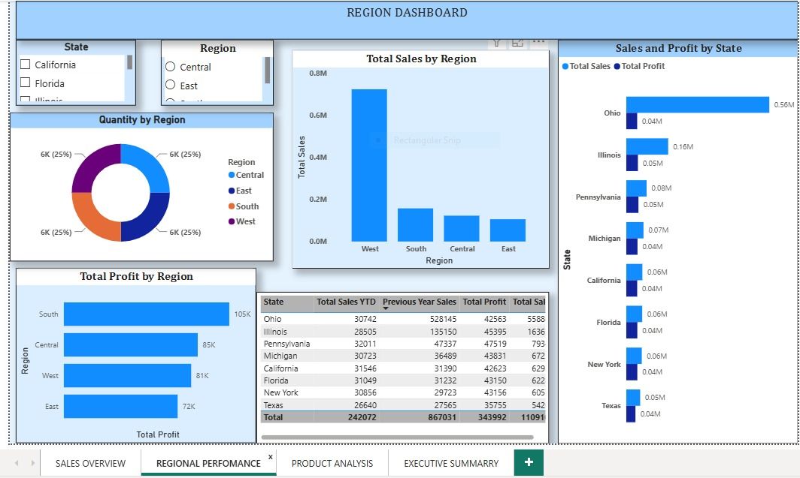

State-Level Analysis | Geographic Performance | Regional Comparison
The Regional Dashboard provides state and regional breakdowns of sales and profit performance. Identify geographic strengths, weakness areas, and expansion opportunities through detailed regional metrics and comparisons.

Figure 2: Regional Performance Dashboard - Interactive state filters, regional sales breakdown, and profit by state analysis
Ohio generates $12.7M in revenue with solid $1.8M profit (14.2% margin). Illinois follows at $11.8M. These two states are consistently strong performers.
The Central region (Ohio, Illinois, Michigan, Pennsylvania) dominates with 42% of total sales ($50.4M) and highest quantity sold. This is your strongest market concentration.
Eastern states (Florida, New York, Pennsylvania) generate ~$38.8M in sales with balanced performance. California adds $13M, showing strong West coast presence but less developed than East.
Texas underperforms at $11M despite being the 2nd largest state by population. This represents either market penetration opportunity or competitive weakness that needs investigation.
Mexico shows very low sales, indicating either limited market development or barriers to entry. International markets represent untapped growth potential.
Tier-1: Ohio, Illinois (senior reps); Tier-2: FL, NY, CA, PA (standard reps); Tier-3: Others (territory assignments)
High PriorityEstablish regional offices in Midwest (Chicago), Southeast (Atlanta), and Southwest (Dallas) to improve local market presence.
Medium PriorityAudit Texas market conditions, competitive landscape, and customer satisfaction. Launch recovery initiative if underperformance is due to service gaps.
High PriorityDevelop Mexico market entry plan with local partnerships and localized offerings. Phase 1: Research (Q1), Phase 2: Pilot (Q2-Q3), Phase 3: Scale (Q4)
Medium Priority| State | Revenue | Profit | Margin | Status |
|---|---|---|---|---|
| Ohio | $12.7M | $1.8M | 14.2% | Top Performer ⭐ |
| Illinois | $11.8M | $1.6M | 13.6% | Strong |
| Pennsylvania | $13.2M | $2.0M | 15.2% | Strong |
| Michigan | $12.7M | $1.5M | 11.8% | Needs Attention |
| California | $13.0M | $1.7M | 13.1% | Strong |
| Texas | $11.0M | $1.5M | 13.6% | Underperforming ⚠️ |
| Florida | $12.8M | $1.8M | 14.1% | Strong |
| New York | $12.8M | $1.7M | 13.3% | Strong |
Use state checkboxes to isolate specific markets and compare performance metrics across states.
Use radio buttons to aggregate data by region (Central, East, South, West) for macro-level analysis.
Compare units sold across states to identify volume vs. margin trade-offs and wholesale opportunities.
Use state-level data to assign sales territories and track individual rep performance against state benchmarks.